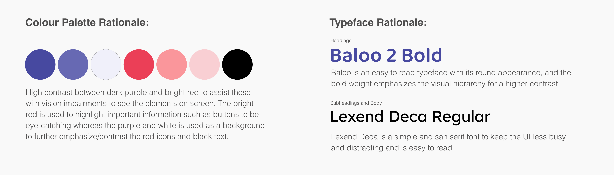
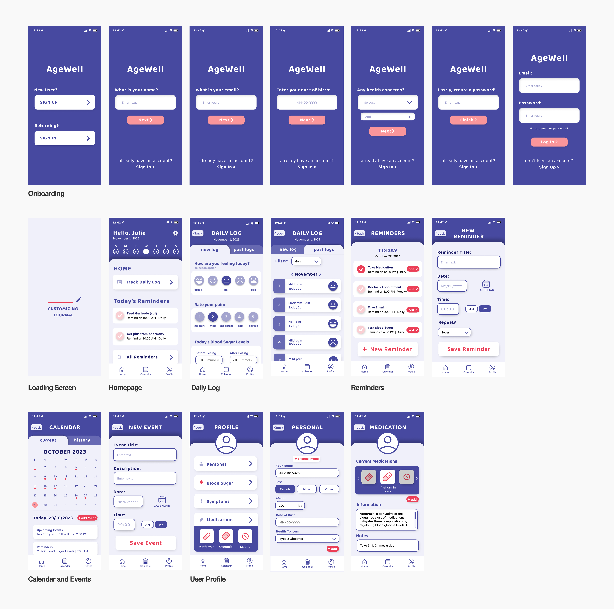
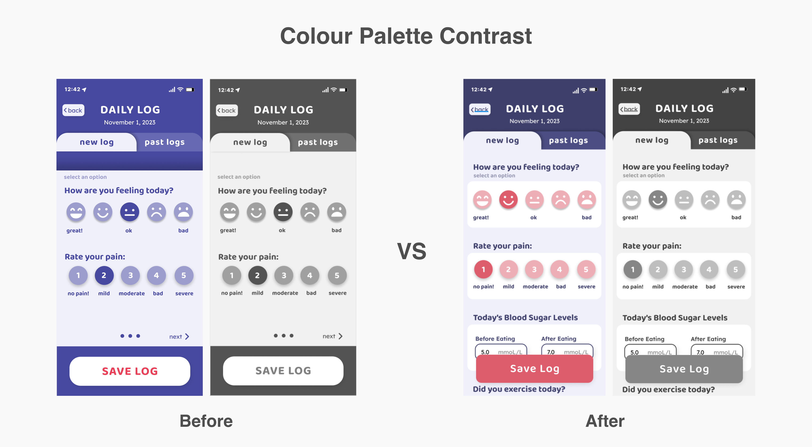

AgeWell Mobile App
Creating a tool to assist elderly users with memory and regaining independence.
Project Context
This was an academic project, for an upper level course Interface Design (IAT 334) at Simon Fraser University. Our team had to identify a relevant issue for our target audience and create an prototype of our final intervention.
Deliverables
Prototyped app and presentation microsite.
My Contribution
- Created the base design and interactions for our final prototype.
- Conducted secondary research and facilitated valuable user-testing sessions.
- Assisted in further development of the visual design and colour scheme to fit users' visual needs.
Duration
4 Weeks (October-November 2023)
Role
Visual Design
Prototyping
User Researcher
User-Testing Facilitator
Team
Areeba Ali, Karina Shuen
Introduction
Our team was assigned to identify a problem space amongst an elderly audience of users 75 years old and above, and to create a suitable intervention to address the issue through through research, user-testing and creating a prototype and microsite to "sell" our final solution.
Research
To understand possible struggles that our audience faces we conducted secondary research across articles discussing the lifestyle of users in our target audience and their common needs.
Key Findings
- Memory loss and forgetfulness that comes with aging makes it difficult for users to remember things such as appointments, medications, or daily tasks.
- As users age they want to regain their independence and feel like they can take care of themselves.
- Elderly users want to feel that they are in control and can keep up with their health and maintain healthy lifestyles by themselves.

Research on issues elderly users face daily.
Problem Space
How can we create an intervention that allows elderly people to feel independent in their every day life and stay on top of their daily tasks and health?
Seeing as we were designing for elderly users and a problem space we were unfamiliar with, it was necessary we understood users' needs when using technology to understand what would make the UI the most accessible for them with deterioriating vision, hearing and mobility that typically comes with age. Thus, we conducted additional research on useful design practices and features we could implement to assist our users.
Key Findings
- Severe vision loss is usually caused by age-related cataracts, macular degeneration or diabetes. The main issues reported are reduced contrast sensitivity, reduced color perception, and weaker near-focus. (source)
- Icons should be labelled and not used independently to convey information
- To supplement memory loss: on’t divide screens into multiple actions — one focus at once will have better results, give clear feedback on progress and completion and use simple plain backgrounds to avoid distraction. (source)
- San-serif typefaces are easier to read on-screen.
- Use a high-contrast colour palette.

Research on how to design for elderly users/those with visual/hearing/mobility impairments.
Design Process
Our intervention was created through an iterative process, in which every week we would present our progress to our teaching team to recieve feedback.
Based on our initial research the team wanted to create an app with the following features: an onboarding screen that allows users to customize their user experience, a daily log for users to input their daily health symptoms and activities, a calendar and reminders to help users remember upcoming events and daily tasks.

Initial brainstorming sketches.

Low fidelity sketches of screen mockups.
It was essential to curate a colour palette and typeface that was highly visible for our users that need a higher contrast palette and simple characters for readability. From our sketches we created high fidelity wireframes and applied our art direction.

Colour palette and typeface rationale.

High fidelity wireframes.
Colour Palette Iterations
When presenting this iteration to our teaching team we recieved feedback that the colour palette was still not high contrast enough which prompted us to go back to developing and testing a suitable colour palette. The team went back to the drawing board and tested new colour palettes based on what was recommended in our secondary research before coming to a dark purple and pink.

Previous colour palette vs. New colour palette.
Prototype Development
With our finalized wireframes we were able to move them to the prototyping stage. Using the prototyping software 'Protopie' I prototyped a majority of the application to use for our final user testing.
User-Testing
We conducted user-testing with users within our desired age range (75+) and received feedback before applying necessary changes. We shared a pre-test questionnaire to gather users' experiences with health/reminder related apps as well as a post-test questionnaire to define areas with usability issues.
I conducted a user-testing session with one of our recruited users using Think-Aloud testing methods with a given list of tasks to complete to simulate how a user would typically use AgeWell (ex. create a new account and login, create a reminder, complete a daily check-in), and took notes as they shared their thought process throughout the testing session and prompted them afterwards to share any difficulties they faced during the test.
User-Testing Results and Findings

Affinity diagram (Common issues highlighted).
Each team member interviewed and conducted testing sessions with one potential user. To organize and narrow down key issues users faced we created an affinity diagram and sorted each observation and comment we noted down by common underlying issues. From this diagram we were able to identify three issues that were brought up in every test.
Final Product
AgeWell is a wellness app for seniors that successfully combines daily journalling, reminders, events and health tracking in one place. The app allows seniors to keep track of their medications, daily symptoms, appointments with doctors, and other day to day tasks or events they need to remember. AgeWell is perfect for seniors who are struggling with old-age-related memory loss and want to regain independence and control in their lives.
App Walkthrough

User Information Sign-Up
The sign-up process allows users to sign in to their account or create an account if they don't have one. This feature allows the user to customize their experience with AgeWell, giving their name, birthday and current health concerns they would like to track through the app.

Onboarding Tutorial
The onboarding screens aim to guide the user through the main features of the app, explain what each feature is and its purpose and help associate icons with their given feature. This walkthrough is shown upon signing on for the first time and is accessible to users at any time to refer back to.

Homepage
The homepage allows the user to navigate through daily tasks and information such as relevant calendar events, and daily reminders. Users can also access and input their daily journal log. The homepage acts as an overview of the user's day for them to quickly access.

Reminders
Users can input reminders into AgeWell to appear on their daily dashboard. The UX of this page is similar to a regular reminders app on most phones for familiarity, and allows users to set times to be notified of said reminder.

Daily Log
The daily log helps users journal and keep track of their daily activity, mood, pain levels and other health symptoms. This feature overtime creates a history log of past entries that allow users to easily remember their symptoms, activities and daily thoughts. The goal of this feature is to assist those who have issues with memory loss to remember their daily symptoms to relay to their doctor when needed.

Calendar
The calendar feature allow users to keep track of their past a future activities and appointments. Users are able to create events, add them to their calendar, and view a record of their past events.

User Profile
The user’s personal profile keeps a record of the user’s personal information, such as medications, current symptoms, and general health information. Users are able to keep track of their medications, blood sugar, and trackable symptoms in the daily log. They are also able to see and edit their personal information, created through the app’s onboarding process.
Reflection
Developing AgeWell helped me to develop my skills in facilitating user-testing and analyzing test results. It was interesting to explore potential problem spaces for this user group and work beyond current design practices and trends like small and minimalistic elements for users who had no issues with vision, or mobility. I felt that overtime I had worked myself into a box when designing and stuck to what I was comfortable with, however, this project helped me recognize this issue and start researching different methods and styles of design to play with and encourged me to work outside of my comfort zone and experiment more.
If I were to revisit this project I would want to flesh out the concept of this app more and possibly look into the health management side of it as I feel we were't able to touch on that topic enough when the target user group could benefit from a newer and more innovative way to manage their medications and doctors visits instead of focusing on taking useful apps such as reminders, calendars and journals (all of which are already availiable on the standard mobile phone).